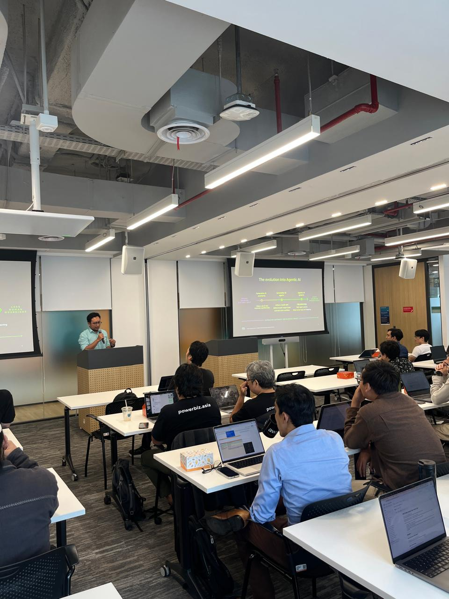
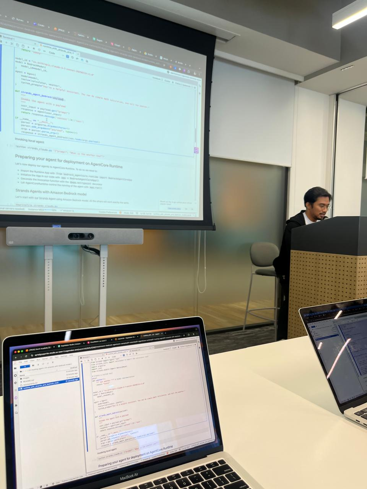
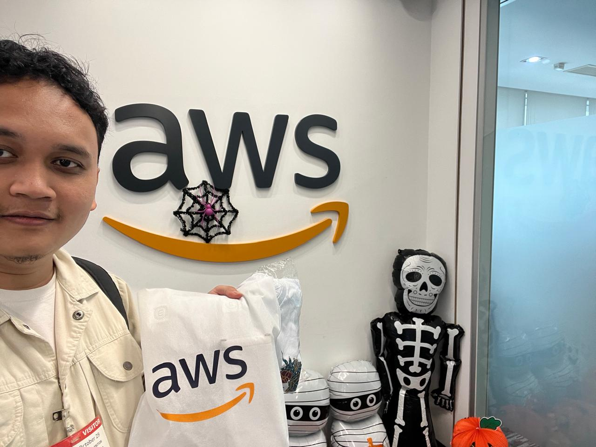

I joined the AWS AgentCore event as a representative of Koltiva. Since we had already implemented Amazon Bedrock in our work, the event was a chance to see how AWS is thinking about a more agentic approach with AgentCore.
And yes, getting some merch at the end was a nice bonus too.